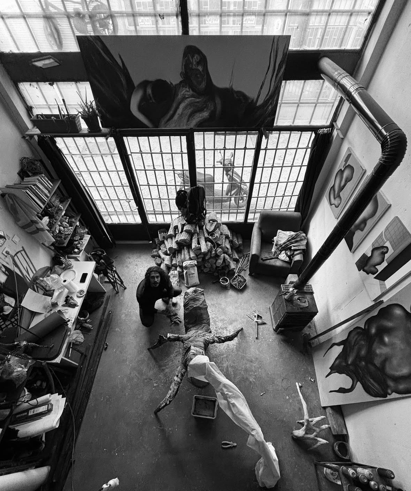
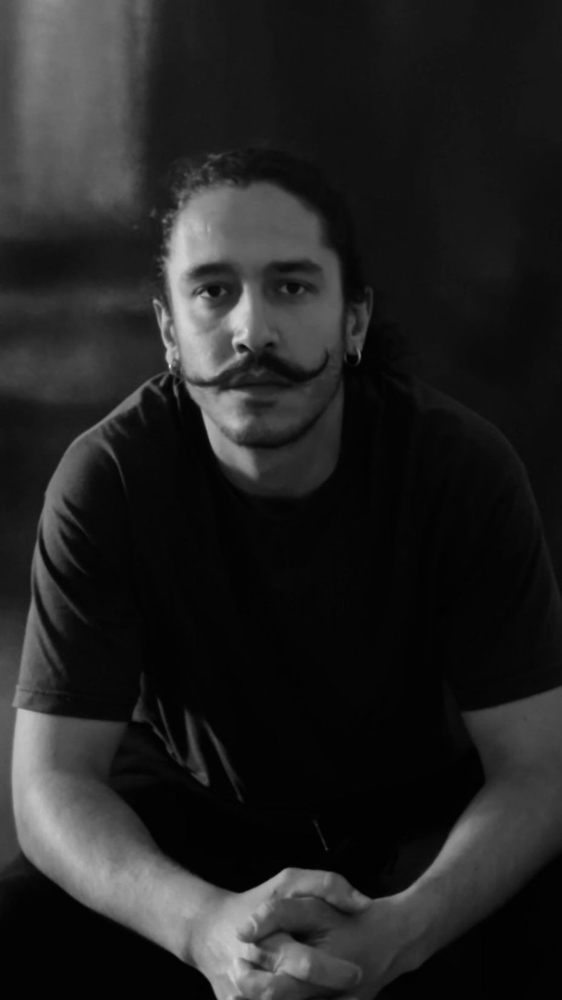

Akın
Ayaz
Kaydır
Kaydır

Atölye, Eskişehir

1999 yılında Ankara'da doğan Akın Ayaz, Eskişehir'de yaşıyor ve çalışıyor. Sokaktan ve duvar resminden gelen bir üretim pratiğinin ardından Bilkent Üniversitesi Bileşik Sanatlar'da, ardından Anadolu Üniversitesi Güzel Sanatlar Fakültesi Heykel Bölümü'nde eğitim aldı. Resim, fotoğraf, video ve yerleştirme arasında, sezgisel ve araştırmacı bir süreçle çalışıyor. 2021–2026 yılları arasında Eskişehir'de Co-Operative Art kolektifini yürüttü.
Born in Ankara in 1999, Akın Ayaz lives and works in Eskişehir. Coming from a practice rooted in the street and in mural painting, he studied Compound Arts at Bilkent University and then Sculpture at the Faculty of Fine Arts, Anadolu University. He works between painting, photography, video and installation through an intuitive, research-driven process. From 2021 to 2026 he ran the Co-Operative Art collective in Eskişehir.
Pratiğim resim, fotoğraf, video ve yerleştirme arasında, sezgisel ve araştırmacı bir süreçle şekilleniyor. Algının kırılganlaştığı, tanıdık olanın netliğini yitirdiği anlarla ilgileniyorum. Sokaktan, duvar resminden gelen bir üretim geçmişim var; sprey boyayı ve büyük ölçeği oradan tanıyorum. Heykel eğitimim ve kamusal alandaki üretimlerim sayesinde buluntu nesne, yerleştirme ve kinetik mekanizmalarla mekâna özgü işler üretiyorum.
Son yıllarda imgeyi bulanıklaştırmaya odaklanıyorum. Bunu yalnızca görsel bir tercih olarak değil, görmeye ve tanımaya duyulan güveni kesintiye uğratan bir yöntem olarak görüyorum. Figür ne tamamen görünür ne de bütünüyle kaybolur; bir eşik hâlinde kalır. Bugün kâğıt üzerine sprey boya ve toz pastelle, tek renkli yüzeylerde çalışıyorum.
Fotoğraf ve video bu pratiğin ayrılmaz parçası. Yıllardır çektiğim fotoğraflar bir arşive dönüştü: buzlu camın, perdenin, karşı ışığın ardında kaybolan figürler, gündelik nesnelerin gözden kaçan ayrıntıları. Bu arşiv hem kendi başına bir üretim alanı hem de resimlerimin doğrudan kaynağı. Açık anlatılar kurmak yerine izleyiciyi kısa bir süreliğine emin olamadığı bir alanda tutmayı önemsiyorum.
My practice takes shape between painting, photography, video and installation, through an intuitive, research-driven process. I am interested in moments when perception becomes fragile and the familiar loses its clarity. My background lies in the street and in mural painting; that is where I came to know spray paint and large scale. Through my training in sculpture and my work in public space, I make site-specific works with found objects, installation and kinetic mechanisms.
In recent years I have focused on blurring the image. I see this not merely as a visual choice but as a method that interrupts our trust in seeing and recognising. The figure is neither fully visible nor entirely lost; it remains at a threshold. Today I work on monochrome surfaces, with spray paint and soft pastel on paper.
Photography and video are an inseparable part of this practice. Over the years my photographs have become an archive: figures vanishing behind frosted glass, curtains and backlight, overlooked details of everyday objects. This archive is both a field of work in its own right and a direct source for my paintings. Rather than building explicit narratives, I want to hold the viewer, for a brief moment, in a space where they cannot be sure.
Bir imge ne kadar silinir, örtülür ya da uzaklaştırılırsa hâlâ tanınır? Tanımanın bittiği, tekinsizliğin başladığı eşik nerede?
Son dönem resimlerimde farklı malzemelerle imgeleri bulanıklaştırarak tanıdık mekânları belirsiz bir hâle sokuyorum. Mekân ve imge kaynaklarım hafızamda olanlar ve çektiğim fotoğraflar. Araştırmanın bir sonraki aşamasında bulanıklığı bir yöntem sözlüğü gibi çıkarmak istiyorum: spreyin mesafesi ve basıncı, toz pastelin sürülmesi ve silinmesi, katman kurup silme, yarı saydam kumaşın ardında kalan imge, buğulu ya da zımparalanmış cam, arkadan ışık, kamerada odak kaybı. Ardından bu yöntemleri mekâna taşımak: ışık, kinetik düzenekler, cam ve nesnelerle, izleyicinin bir vitrine bakar gibi baktığı, imgenin ancak belli bir mesafeden ya da açıdan netleştiği bir yerleştirme.
How far can an image be erased, veiled or pushed away and still be recognised? Where is the threshold at which recognition ends and the uncanny begins?
In my recent paintings I blur images with different materials, unsettling familiar spaces. My sources for spaces and images are what I hold in memory and the photographs I take. In the next stage of the research I want to set out blur as a vocabulary of methods: the distance and pressure of the spray, soft pastel applied and wiped away, layers built up and erased, an image left behind semi-transparent fabric, misted or sanded glass, backlight, loss of focus in the camera. Then to carry these methods into space: with light, kinetic devices, glass and objects, an installation that the viewer looks at as if into a shop window, where the image comes into focus only from a certain distance or angle.